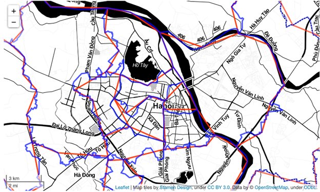

Official World Bank Boundaries#
The WBG produces many datasets at the global scale, often in complex geospatial formats. These datasets need to be summarized and aggregated at a smaller administrative level to provide meaningful results – a process which requires a reliable and up-to-date set of global administrative boundaries.
The Global Administrative Boundaries subtask (P501733) of the Space2Stats program (P180913) seeks to obtain, disseminate, and update a new high-resolution global boundary dataset at Levels 0 (national), 1 (state/province), and 2 (district). Moving forward, the files will have documented versioning as well as a detailed and well-defined coding system so that the boundaries can be easily joined with tabular data. The licensing on the high-resolution files will be public, creating a global public good that can be used by other organizations in the international development community.
To illustrate the difference between the high and medium resolution products, the following images show the high resolution Administrative 2 boundaries (in blue, digitized at a 1:250,000 scale) and medium resolution (in red, digitized at a 1:1,000,000 scale). While acceptable for regional or global mapping, medium resolution is of substantively lower quality when viewing a small area. This is especially noteworthy when summarizing other global datasets by administrative area, as the lower-resolution boundaries can significantly affect the results.
The leadership of this project is shared between the DECAT Global Operations Support Team (GOST) and the GCS Cartography Unit. With the amount of data that DECAT produces, the team has a vested interest in ensuring the boundary files needed for summarizing datasets are reliable. Meanwhile, the Cartography Unit currently holds the responsibility of maintaining and hosting the official WBG GAD and distributing it via the Development Data Hub (DDH).
In summer 2024, the contract for the production of the new high-resolution boundaries was awarded to IMA, a vendor with extensive experience in producing legally-approved boundary datasets for international use. The draft dataset was delivered in October 2024, edited by the WBG’s legal department, and sent back to IMA for a few small edits. The final legally-approved dataset is expected by late November 2024. The boundaries will then be placed on DDH and made publicly available, while the team then focuses on the editing and update plan.